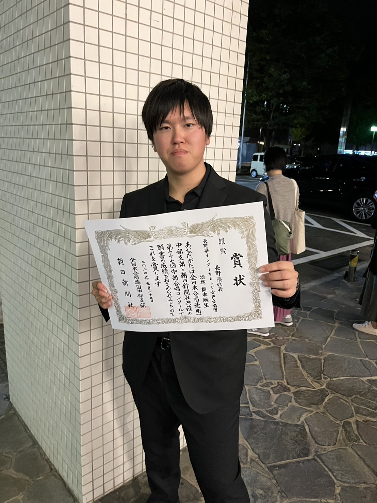

指揮者
橋本颯生
Satsuki Hashimoto
信州大学大学院 総合理工学研究科 在学。北海道帯広三条高等学校合唱部で合唱を始め、全日本合唱コンクール全国大会、NHK全国学校音楽コンクール全国コンクールなどに出場。
長野大学合唱サークルひびき 常任指揮者。2024年に長野県インターカレッジ女声合唱団を設立・指揮。東京の合唱団でも活動しています。
経歴・活動を詳しく見る
2022年12月より、長野大学合唱サークルひびき 常任指揮者。
2023年、dolce con espressivoを設立。長野県ヴォーカル･アンサンブルフェスティバルでエメラルド賞（50団体中4位）。
2024年、長野県インターカレッジ女声合唱団を設立・指揮。全日本合唱コンクール長野県大会で金賞・長野県知事賞・長野市教育委員会賞、中部支部大会で銀賞。同年度の長野県ヴォーカル･アンサンブルフェスティバルでダイヤモンド賞（62団体中1位）。
2025年、長野県合唱祭の中信地区合同ステージを指揮。長野県インターカレッジ女声合唱団を指揮し、全日本合唱コンクール長野県大会で金賞・長野県知事賞・岡谷市教育委員会賞、中部支部大会で銅賞。上田市立第六中学校合唱部の外部指導者を務める。
東信合唱連盟 理事。長野県合唱連盟 中学校部活動地域展開ワーキンググループ メンバー。